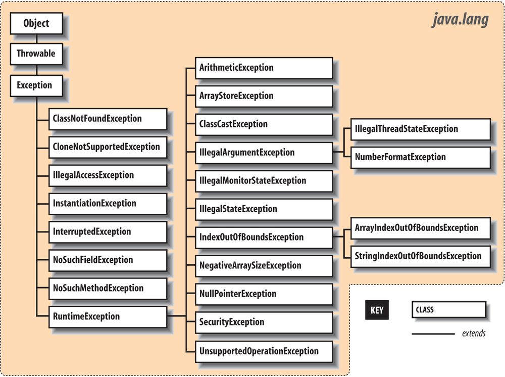
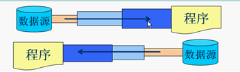

Java On Call 4
- Java基础知识
- 面向对象
- 常用API
- 集合I/O
- 多线程、网络编程、反射、设计模式
这是准备java面试的第二天，以上的分类的思维导图，来自->这里
- 这里是整理好的面试题，至少都过一遍:
IO
异常(Expection)
- 异常是当程序中出现错误的时候，会引起Interrupt的一些错误。Interrupt中断分为两种，一种是软件中断（Software Interrupt）一种是硬件中断。软件中断中就包含exception和system call（系统调用）。
- 在java中，所有的异常类都继承于java.lang.Exception，而Exception类继承于Throwable类，如图

-
Throwable还有另外一个子类叫做Error，Error用来表示运行时环境发生的错误，如果程序陷入了error，那么一般很难恢复了
-
捕获异常
try/catchtry{ //可能会出现异常e1的代码 } catch(ExpectionName e1){ //如果真的出现了异常e1 //对错误进行处理的代码 } finally{ //不管怎么样必须会执行的代码 //通常用来进行资源的释放 }- 一段可能出现问题的代码可以跟多个catch捕获块，每个catch捕获块都界定了自己要捕获的异常，捕捉到哪个异常哪个捕获块就会执行，但是不管怎样finally里面的东西肯定是会执行的
-
抛出异常
throws/throw：如果一个方法并没有捕获到一个检查性异常，那么该方法必须使用throws关键字声明。throws关键字放在方法签名的尾部，也可以使用throw关键字抛出一个异常，无论他是刚实例化的还是刚捕获的，其实抛出异常主要针对的是自定义异常，自己可以先写一个异常类，然后自定义类里面自己抛出自定义异常类，可以看看java on call 2里面的halloween类import java.io.*; public class className { public void deposit(double amount) throws RemoteException { // Method implementation throw new RemoteException(); } //Remainder of class definition } -
final, finally, finalize的区别是什么
- final是一个修饰符，他把一个变量变成了一个常量，为什么说是变成了一个常量呢？因为加了final的变量就不能被修改了，同理加了final的方法也不可以被子类重写，加了final的类不可以被子类继承
- finally是异常处理代码块里面的，finally块下的代码是肯定会被执行的，除非jvm在执行到finally的时候就结束了
- finalize是Object类中的一个方法finalize()，可以进行垃圾回收
File
- java文件类以抽象的方式代表文件名和目录路径名。该类主要用于文件和目录的创建，文件的查找和文件的删除等。File对象代表磁盘中实际存在的文件和目录，通过以下构造方法创建一个File对象。Basic File
- 所以file对象是为一个路径而创建的，这个file对象可以为这个路径创建文件啊，创建新路径啊，删除文件/文件夹
- 递归：方法内部调用本方法
- Java IO流学习总结二：File
IO流（Java IO流学习总结）

- 什么是流？官方定义是流是一组有顺序，有起点和终点的字节集合，是对数据传输的总称或抽象。即数据在两设备之间的传输成为流，流的本质是数据传输，根据数据传输特性将流抽象为各种类，方便更直观的进行数据操作
- 根据上面那张图，IO流可以按照处理数据类型分为字符流和字节流；也可以按照数据流向分为输入流和输出流；还可以按照流是否直接连接实际数据源，例如文件、网络、字节数组等，将流又可以划分为实体流（节点流）和装饰流（处理流）两大类；又根据具不具备缓冲功能分成了字节输入/输出流和字节缓冲输入/输出流
- 字符流VS字节流
- 因为数据编码的不同，而有了字符流来对字符进行高效操作的流对象。但是字符流的本质其实就是基于字节流读取
- 读写单位不同：字节流以一个字节为单位，字符流以字符为单位，根据码表映射字符，一次可能读取多个字节
- 处理对象不同：字节流能处理所有类型的数据，而字符流只可以处理字符类型的数据。字节流反倒是可以全部数据是因为不管是什么东西，他的最小单位都是一个字节，所以字节流可以处理设备商所有数据
- 字节流一次读入/出是八位
- 字符流一次读如/出是十六位
- 如果是处理纯文本的话，就优先考虑字符流
- 输入流VS输出流：很简单，输入流只能进行读操作，输出流只能进行写操作，程序中需要根据带传输数据的不同特性而使用不同的流
- 实体流VS装饰流：
- 实体流指的是直接连接数据源的流类
- 装饰流指的是不直接连接数据源，而是以其他流对象为基础建立的流类。该类流实现了将实体流中的数据进行转换，增强流对象的读写能力
- 输入字节流（InputStream）也被称为reader
- 输入字节流是所有输入字节流的父类，他是一个抽象类
- 介质流：
ByteArrayInputStream, StringBufferInputStream, FileInputStream，这三种基本介质流分别从byte数组，StringBuffer和本地文件读取数据 PipedInputStream是从与其他线程共用的管道中读取数据ObjectInputStream, FilterInputStream的子类都是装饰流
- 输出字节流（OutputStream）也被称为writer
- 输出字节流是所有输出字节流类别的流的父类，是一个抽象类
ByteArrayOutputStream, FileOutputStream是两种基本的介质流，分别向byte数组和本地文件写入数据PipedInputStream是从与其他线程共用的管道中写入数据ObjectInputStream, FilterInputStream的子类都是装饰流
- 节点流：直接与数据源相连，读入或读出。直接使用节点流读写不方便，为了更快的读写程序，才有了处理流
- 像刚刚提到的，除了装饰流外，都是节点流
-
处理流：处理流和节点流往往一起使用，在节点流的基础上再套接一层，套接在节点流之上的就是处理流。不直接连接数据源，而是以其他流对象为基础建立的流类。该类流实现了将实体流中的数据进行转换，增强流对象的读写能力。处理流的构造方法总是要带一个其他的流对象做参数。一个流对象经过其他流的多次包装，称为流的链接。

-
转换流：InputStreamReader 、OutputStreamWriter 要InputStream或OutputStream作为参数，实现从字节流到字符流的转换。
InputStreamReader(InputStream); //通过构造函数初始化，使用的是本系统默认的编码表GBK。 InputStreamReader(InputStream,String charSet); //通过该构造函数初始化，可以指定编码表。 OutputStreamWriter(OutputStream); //通过该构造函数初始化，使用的是本系统默认的编码表GBK。 OutputStreamwriter(OutputStream,String charSet); //通过该构造函数初始化，可以指定编码表。 //———————————————— //版权声明：本文为CSDN博主「赵彦军」的原创文章，遵循CC 4.0 BY-SA版权协议，转载请附上原文出处链接及本声明。 //原文链接：https://blog.csdn.net/zhaoyanjun6/article/details/54292148 - 其实字符流和字节流的操作都很像，以下是两个字节流FileInputStream和字节流的FileOutputStream的操作
- FileInputStream读取文件内容
package com.app;
import java.io.FileInputStream;
import java.io.FileNotFoundException;
import java.io.IOException;
public class A1 {
public static void main(String[] args) {
A1 a1 = new A1();
//电脑d盘中的abc.txt 文档
String filePath = "D:/abc.txt" ;
String reslut = a1.readFile( filePath ) ;
System.out.println( reslut );
}
/**
* 读取指定文件的内容
* @param filePath ： 文件的路径
* @return 返回的结果
*/
public String readFile( String filePath ){
FileInputStream fis=null;
String result = "" ;
try {
// 根据path路径实例化一个输入流的对象
fis = new FileInputStream( filePath );
//2. 返回这个输入流中可以被读的剩下的bytes字节的估计值；
int size = fis.available() ;
//3. 根据输入流中的字节数创建byte数组；
byte[] array = new byte[size];
//4.把数据读取到数组中；
fis.read( array ) ;
//5.根据获取到的Byte数组新建一个字符串，然后输出；
result = new String(array);
} catch (FileNotFoundException e) {
e.printStackTrace();
}catch (IOException e) {
e.printStackTrace();
}finally{
if ( fis != null) {
try {
fis.close();
} catch (IOException e) {
e.printStackTrace();
}
}
}
return result ;
}
}
- FileOutputStream将内容写入文件
package com.app;
import java.io.FileNotFoundException;
import java.io.FileOutputStream;
import java.io.IOException;
public class A2 {
public static void main(String[] args) {
A2 a2 = new A2();
//电脑d盘中的abc.txt 文档
String filePath = "D:/abc.txt" ;
//要写入的内容
String content = "今天是2017/1/9,天气很好" ;
a2.writeFile( filePath , content ) ;
}
/**
* 根据文件路径创建输出流
* @param filePath ： 文件的路径
* @param content : 需要写入的内容
*/
public void writeFile( String filePath , String content ){
FileOutputStream fos = null ;
try {
//1、根据文件路径创建输出流
fos = new FileOutputStream( filePath );
//2、把string转换为byte数组；
byte[] array = content.getBytes() ;
//3、把byte数组输出；
fos.write( array );
} catch (FileNotFoundException e) {
e.printStackTrace();
}catch (IOException e) {
e.printStackTrace();
}finally{
if ( fos != null) {
try {
fos.close();
} catch (IOException e) {
e.printStackTrace();
}
}
}
}
}
- 可否这么理解：流指的是数据传输，所以java io流提供了一种办法，让人可以直接向文件里面传输数据；而Java File类则是更高层级的操作，它提供的方法可以以抽象的方式代表文件名和目录文件名，主要用于文件和目录的创建、文件的查找和文件的删除等。
- flush()与close()的区别
- 要理解这个问题，首先要知道，当Java在发送数据的时候，存在一个缓冲区。Java会先把数据放到缓冲区，当缓冲区满了，再把数据从缓冲区发到目标地。flush的意思就是强制把缓冲区的数据发到目标地，哪怕他没有满
- flush(): Flushes the stream.
- close(): Closes the stream, flushing it first.
- 所以不管是flush()还是close()，都成功把缓冲区的数据给清干净了，并且确保了即使是在数据量很小的情况下，数据都能到达目标地
FileWriter(String fileName, boolean append): Creates a FileWriter object using specified fileName with a boolean indicating whether or not to append the data written.- BufferedReader/BufferedWriter（具有缓冲功能的输入输出）
- 又到了CPU Cycle的问题！如果是普通的输入输出，他是逐个逐个字节进行输入或输出，这样虽然也可以完成工作，但是在效率上存有很大的问题。因为比如这组数据有8个字节，那么他从磁盘取完一个字节，又要取一个字节就很浪费时间。在磁盘写入的过程中，内存只能干瞪眼，当磁盘写完一个字节后，内存再把下一个字节交给磁盘。太频繁的调动磁盘了！但是如果是具有缓冲功能的输入输出的话，那么并不是每一个字节都要调动一次磁盘，而是等请求充满了缓冲区之后才调动磁盘，这样就会速度快很多。
- InputStreamWriter是字节流通向字符流的桥梁
- OutputStreamWriter是字符流通向字节流的桥梁
打印流
- 在整个IO包中，打印流是输出信息做方便的类，主要包含字节打印流(PrintStream)和字符打印流(PrintWriter)。打印流提供了非常方便的打印功能，可以打印任何的数据类型，例如：小数、整数、字符串等等。
- 之前在打印信息的时候需要使用OutputStream去打印，但是这样的话数据输出就会很麻烦，因为需要先把String转成
byte[]，打印流可以方便的进行输出。 System.out.println()：就是其中的方法。此方法可以打印任意的数据类型
Properties类
- Properties继承于Hashtable类。表示一个持久的属性集。属性列表中每个键及其对应的值都是一个字符串
- Properties 类被许多Java类使用。例如，在获取环境变量时它就作为System.getProperties()方法的返回值。
- 我们在很多需要避免硬编码的应用场景下需要使用properties文件来加载程序需要的配置信息，比如JDBC、MyBatis框架等。Properties类则是properties文件和程序的中间桥梁，不论是从properties文件读取信息还是写入信息到properties文件都要经由Properties类。